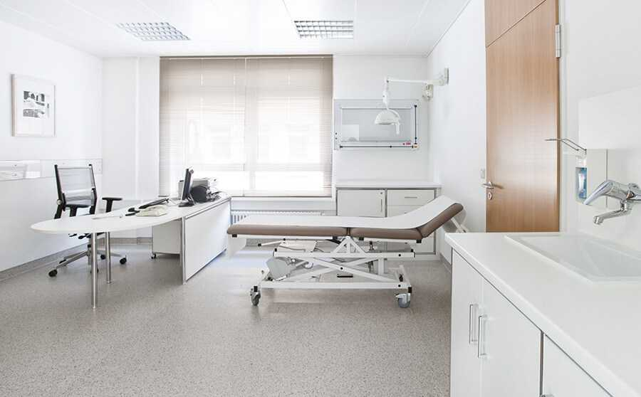
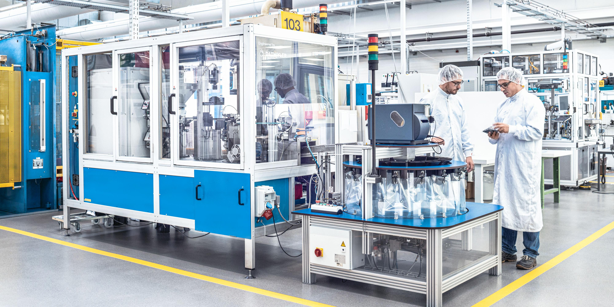

Sauberkeit, auf die Sie sich jeden Tag verlassen können. Professionell, diskret und exakt auf Ihre Räumlichkeiten abgestimmt.
Qualitätsgarantie
Regelmässige Kontrollen durch unsere Vorarbeiter
Flexibel & angepasst
Reinigung nach Ihrem Zeitplan und Ihren Anforderungen
Zertifizierte Produkte
Umweltschonende, geprüfte Reinigungsmittel
Direkter Ansprechpartner
Kein Callcenter – immer die richtige Person
Unsere Unterhaltsreinigung sorgt dafür, dass Ihre Räumlichkeiten täglich sauber, gepflegt und einladend sind. Wir kennen Ihre Anforderungen genau – und erfüllen sie zuverlässig, diskret und mit höchstem Qualitätsanspruch.
Ob Büro, Klinik, Schule oder Industriebetrieb: Wir entwickeln für jedes Objekt einen massgeschneiderten Reinigungsplan und führen ihn professionell aus.
Kostenloses Angebot anfragen →Wir reinigen dort, wo es zählt – in der ganzen Zentralschweiz, angepasst an Ihre Anforderungen.
Büros & Verwaltungsgebäude
Schreibtische, Böden, Sanitäranlagen und Gemeinschaftsbereiche – täglich sauber und repräsentativ. Wir reinigen flexibel nach Ihrem Zeitplan: vor, während oder nach den Bürozeiten – diskret, zuverlässig und ohne Ihren Betrieb zu stören.

Kliniken & Arztpraxen
In medizinischen Einrichtungen gelten besondere Anforderungen – an Hygiene, Verhalten und Diskretion. Unser Personal wird gezielt für den Einsatz in Praxis- und Klinikbereichen geschult: von korrekten Desinfektionsverfahren über das richtige Verhalten im Patientenumfeld bis hin zum Schutz sensibler Bereiche. Alle Mitarbeitenden unterliegen einer Geheimhaltungsverpflichtung und sind im Umgang mit vertraulichen Umgebungen vertraut.

Industrie & Produktion
In Produktionsbetrieben reinigen wir Flächen, die höchste Ansprüche stellen: Wir schonen Maschinen, Geräte und produzierte Ware, halten uns strikt an betriebliche Anweisungen und Sicherheitsregeln und unterstützen unsere Kunden dabei, trotz hohem Verschmutzungsgrad, eingeschränkter Zugänglichkeit oder zeitlichem Druck saubere Arbeitsbedingungen zu gewährleisten. Auch Labore und Reinräume reinigen wir – mit fundiertem Wissen zu den jeweiligen Klassifizierungen und Normen (z. B. ISO 5), damit keine Anforderung übersehen wird.

Einkaufszentren & Verkaufslokale
Repräsentative Sauberkeit für Ihre Kundschaft – vor, während und nach den Öffnungszeiten, flexibel und reaktionsschnell.

Schulen & Bildungseinrichtungen
Klassenzimmer, Korridore und Gemeinschaftsbereiche werden täglich professionell gereinigt – für eine hygienische Lernumgebung. Sportböden reinigen wir fachgerecht nach DIN 18032 mit materialschonenden, norm-konformen Verfahren, die den Belag langfristig schützen. Dabei setzen wir ausschliesslich nachhaltige, schulmittelgeprüfte Reinigungsprodukte ein, die sicher für Mensch und Umwelt sind.
Weitere Einsatzgebiete auf Anfrage
Und vieles mehr
Kein Objekt gleicht dem anderen – und genau das ist unsere Stärke. Ob Parkhäuser, Sporthallen, Hotels oder öffentliche Gebäude: Wir erarbeiten gemeinsam mit Ihnen die passende Lösung für jede Anforderung.
Zum Kontaktformular →Fahren Sie mit der Maus über jeden Schritt, um mehr zu erfahren.
Anfrage
Kontaktieren Sie uns per Telefon, E-Mail oder Formular – wir melden uns innert 24 Stunden.
Besichtigung
Wir besichtigen Ihr Objekt, nehmen alle Wünsche auf und definieren gemeinsam den Leistungsumfang.
Offerte
Sie erhalten ein transparentes, massgeschneidertes Angebot – ohne versteckte Kosten.
Start & Betreuung
Wir starten – mit Qualitätskontrollen, direktem Ansprechpartner und flexibler Anpassung.
Ein kontinuierlicher Kreislauf – jeder Schritt verbessert den nächsten, Qualität wächst mit jeder Runde.
Individuelle Reinigungspläne
Jedes Objekt erhält einen schriftlichen, massgeschneiderten Plan – nichts bleibt dem Zufall überlassen.
Regelmässige Schulungen
Unser Team wird laufend in Technik, Produkten und Sicherheit weitergebildet.
Laufende Qualitätskontrolle
Kontrollen durch Vorarbeiter und gemeinsame Rundgänge mit dem Kunden.
Offene Kommunikation
Schnelle Reaktion auf Feedback – wir passen uns kontinuierlich an Ihre Bedürfnisse an.
Nachhaltige Produkte
Ausschliesslich geprüfte, umweltfreundliche Reinigungsmittel – gut für Mensch und Natur.
Direkter Ansprechpartner
Kein Callcenter – immer die Person, die Ihr Objekt kennt.
Überzeugen Sie sich selbst – wir erstellen Ihnen kostenlos und unverbindlich ein massgeschneidertes Angebot für Ihr Objekt.
Jetzt Angebot anfragen →